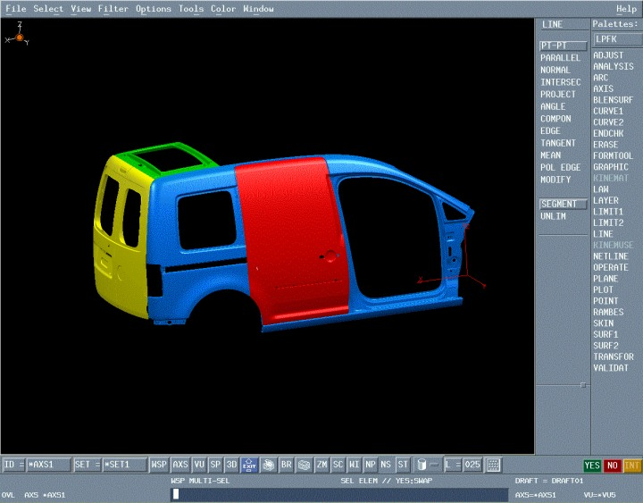
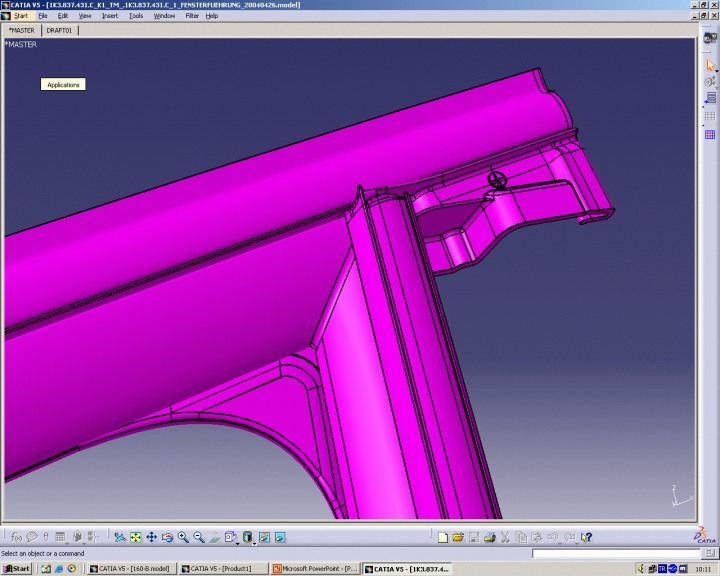
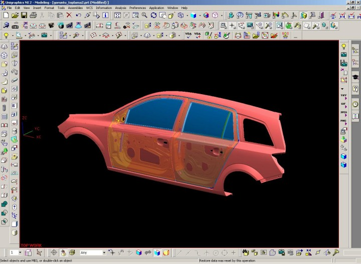
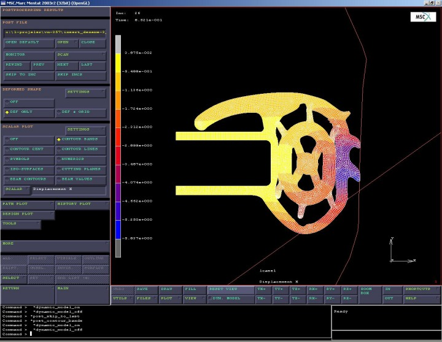
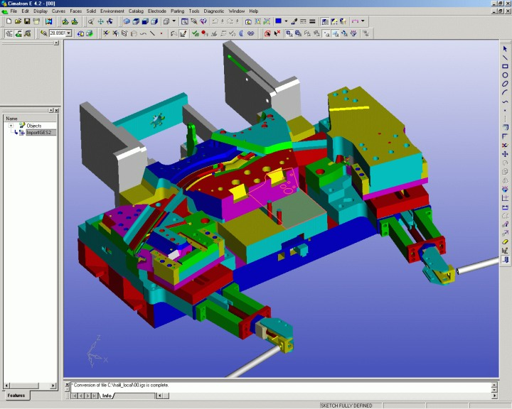
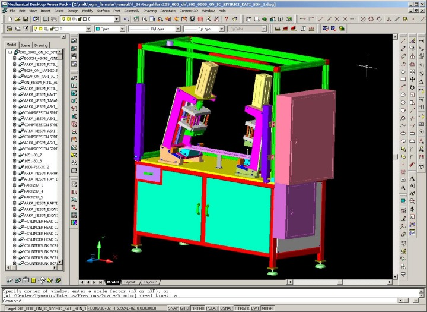
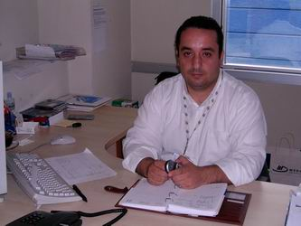

|
Uygulama örnekleri:

CATIA V4

CATIA V5

UG NX2

MSC.Marc Mentat

Cimatron

Mechanical Desktop

Okan Kýzýl, Ürün
Geliþtirme Md. Yard. |
Okan Bey, ilk olarak kendiniz bir tanýtýr mýsýnýz?
Okan Kýzýl: Standard Profil'de Ürün Geliþtirme Müdür Yardýmcýsý olarak görev yapýyorum. Makine mühendisiyim. 1996 Ýstanbul Teknik Üniversitesi mezunuyum.
Kullandýðýnýz 3D Optik tarama sistemi hakkýnda bize bilgi verir misiniz?
Okan Kýzýl: Biz, bilgisayar destekli ürün geliþtirme altyapýmýzý GOM ATOS sistemiyle tamamladýk. Bu, þunun için önemli; Birtakým modifikasyonlar yaparken CAD modelleri üzerinden hareket edemiyorsunuz. Ya yapýlmýþ bir þeyden hareket edeceksiniz ya da deneyerek yapacaksýn. Deneyerek yaparsanýz mevcut parçayý bölmüþ oluyorsunuz. Bunu bir daha CAD ortamýna almak çok daha zahmetli. Çünkü bizim hassasiyetimiz yüzde bir mm civarýnda. Bunu ölçmek de modellemek de çok büyük bir zahmet. O yüzden böyle bir sisteme ihtiyaç duyduk. Yaklaþýk 2.5 yýldan beri GOM firmasýnýn üretmiþ olduðu ATOS II SO modeli optik tarama sistemini kullanýyoruz.
Gördüðümüz kadarýyla, conta profili tasarlamanýz gereken camlarý, bunlar için üretilmiþ profilleri ve profil ekstrüzyon kalýplarýný tarýyorsunuz. Bunlarýn her birini taramanýzdaki hedeflerinizi bize anlatýr mýsýnýz?
Okan Kýzýl: Söylediklerinizin yaný sýra bir de araç kasalarýný tarýyoruz. Araç kasalarýnýn arasýndaki varyasyonlar bizler için önemli. Çünkü arabanýn sol tarafýna uyan bir parça bazen sað tarafýna toleranslar dahilinde uymuyor. Ya da arabanýn kasasýnda asimetrik bir tolerans deðiþimi varsa bunu tespit ediyoruz. Sonra bu parçaya uygun yeni bir kalýbý modifiye ediyoruz. Bu aslýnda tersine bir mühendislik. Bu olmadan da tam olarak müþteri memnuniyeti ortaya çýkmýyor. En baþta, bu yöntemle kalite problemini gidermiþ oluyoruz. Buradaki esas amaç kaliteyi ilk kalýp bazýndayken yakalamak. Yakaladýðýnýz hatayý deðiþtirip o þekilde üretime göndermeniz lazým. Yoksa bunun baþka bir yöntemi yok... Kalýplarý da benzer þekilde kalite kontrol ve tersine mühendislik amaçlý tarýyoruz.
Kalýp tasarým ve imalatýnda kullandýðýnýz teknolojilerden bahseder misiniz?
Okan Kýzýl: Kalýplarý Cimatron yazýlýmý ile tasarlýyoruz. Kalýp iþlemeyi MAZAK FJV 200, 3.5 Eksen yüksek hýzda Ýþleme (HSM) tezgahýnda yapýyoruz.
Bir süre önce kalýp iþleme sýrasýndaki su soðutma yerine hava soðutma sistemine geçtik; Su soðutma, bir kere, kullanýlan takýmlarý çok etkiliyor. Çok hýzlý ve soðuma ani olduðundan. Bu da takým ömrünü etkiliyor. Her bir takýmýn 60 Euro civarýnda olduðunu düþünürseniz bunlarýn her seferinde ömürlerinin yüzde 30-40'ýný harcamýþ olursunuz. Burada hava soðutma olduðu zaman diðer parçalarý elimine etmiþ oluyorsunuz. Sonuçta size takýmýn gerçek performansý kalýyor. Bu da ciddi kazanç oluþturuyor.
Hava ile soðutmayý biraz daha açar mýsýnýz?
Okan Kýzýl: Bu, þartlandýrýlmýþ hava. Normal diðer fabrikalarda da kullanýlan hava yani. Su soðutmayla karþýlaþtýrýldýðýnda, hava soðutmalý bir tezgahta iþleme yaparken oluþan aþýrý ýsýnma önemli deðil. Karbür kesici uçlar kor olana kadar 300-400 dereceye kadar kullanýlabiliyor zaten.
Bu sektörde kariyer yapmak isteyen gençlere söylemek istedikleriniz ve tavsiyeleriniz nelerdir?
Okan Kýzýl: Bir kere hiçbir zaman gerçek mühendislik eðitimi almadan ürün geliþtirme iþiyle ilgilenmemelerini tavsiye ederim. Çünkü bu profesyonellik isteyen bir iþ. Sevmeleri gerekiyor. Zaten severlerse baþarýlý oluyorlar. Bunu baþardýktan sonra gerisi kolay...
|